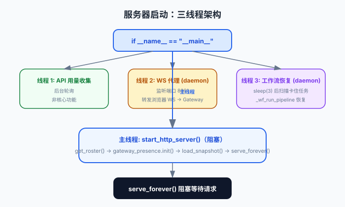

服务器启动：三线并行
Virtual Office 的 Python 后端采用简洁的三线程架构：HTTP 主服务器、WebSocket 代理、Gateway Presence 监听器。从 if __name__ == "__main__" 出发，理解各组件如何协同启动。
了解 Python 基本语法和 threading 模块即可。建议先阅读整体架构与依赖关系。
启动入口
启动入口位于 app/server.py 第 10469 行。Docker 容器通过 entrypoint.sh 执行 python3 server.py。
# server.py:10469-10484
if __name__ == "__main__":
_api_usage_collector.start()
ws_thread = threading.Thread(target=start_ws_server, daemon=True)
ws_thread.start()
resume_thread = threading.Thread(target=_wf_auto_resume_on_startup, daemon=True)
resume_thread.start()
start_http_server() # 阻塞主线程三条线程

图：三线程启动流程。主线程阻塞在 HTTP serve_forever()，两个 daemon 线程分别处理 WS 代理和工作流自动恢复。
API 用量收集器
后台线程，定期轮询 API 用量数据。非核心功能，启动即运行。
WebSocket 代理线程（daemon）
监听 VO_WS_PORT（默认 8091），将浏览器 WebSocket 连接转发到 OpenClaw Gateway。设为 daemon 线程，主进程退出时自动清理。
工作流自动恢复线程（daemon）
等待 3 秒后扫描 projects.json 中卡住的任务，调用 _wf_run_pipeline 恢复执行。
HTTP 主服务器（主线程阻塞）
调用 start_http_server()，执行完整的初始化流程后进入 serve_forever() 阻塞等待请求。
HTTP 服务器初始化流程
start_http_server() 是核心初始化函数，执行以下步骤：
获取代理花名册
get_roster() 触发双 Provider 发现（OpenClaw + Hermes）
初始化 Gateway Presence
gateway_presence.init_agents() 初始化状态，set_meetings_file() 设置会议文件
加载持久化快照
gateway_presence.load_snapshot() 从磁盘恢复上次状态，防止崩溃后丢失
自动配置 Gateway 源
_auto_configure_gateway_origin() 确保 Gateway 连接地址正确
启动 Gateway 监听
gateway_presence.start() 连接 Gateway WebSocket，开始接收事件
启动快照保存线程
每 30 秒将内存中的 presence 状态保存到磁盘
进入 serve_forever()
ThreadingHTTPServer 开始处理 HTTP 请求
配置系统：三层优先级
| 优先级 | 来源 | 说明 |
|---|---|---|
| 1（最高） | 环境变量 | VO_* 前缀，覆盖所有其他配置 |
| 2 | /data/vo-config.json | Docker Volume 持久化配置，容器重启后保留 |
| 3（最低） | /app/vo-config.json | 容器层默认配置，随镜像更新 |
关键环境变量：
| 变量 | 默认值 | 用途 |
|---|---|---|
VO_PORT | 8090 | HTTP 端口 |
VO_WS_PORT | 8091 | WebSocket 代理端口 |
VO_GATEWAY_URL | ws://127.0.0.1:18789 | OpenClaw Gateway WS 地址 |
VO_OPENCLAW_PATH | ~/.openclaw | OpenClaw 家目录 |
VO_STATUS_DIR | /data | 状态数据持久化目录 |
为什么选择 threading 而非 asyncio？
项目选择 http.server + threading 而非 ASGI/asyncio 框架，原因是它需要同时管理 HTTP、WebSocket 代理和 Gateway 监听。标准库的 http.server + threading 足以满足需求且减少了依赖，符合"自托管、轻量"的产品定位。
Daemon 线程的设计确保主线程退出时所有后台线程自动清理，避免了孤儿进程问题。